No one. Each face is a random vector of 512 numbers pushed through a trained network.
Karras, Laine & Aila, A Style-Based Generator Architecture for GANs (StyleGAN), 2019 · CC BY-NC 4.0
Your turn to be the judge
Real or generated?
1generated
2real
3generated
4real
5real
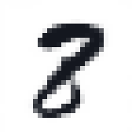
6generated
7generated
8generated
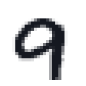
9real
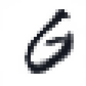
10generated
11real
12real
Six are MNIST test digits, six come from a network. Write down which six are fake.
Generated: 1, 3, 6, 7, 8, 10 (teal frames). Six from a small network we will train ourselves, in about 9 minutes.
Generation is not only "make a random picture"
Predict the output, then look
a sketch → a photo
→
?
a horse → a zebra
→
?
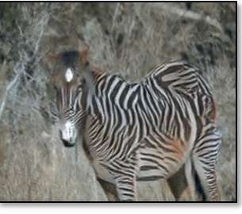
fill a hole
→
?
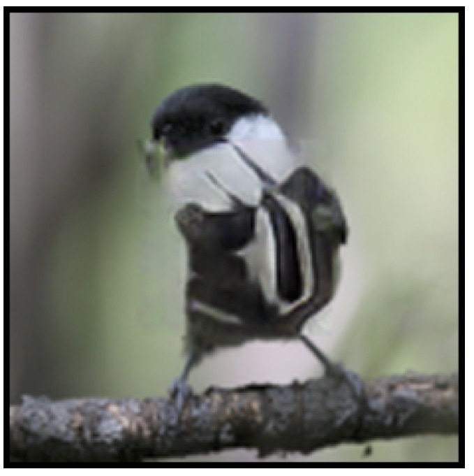
a label map → a landscape
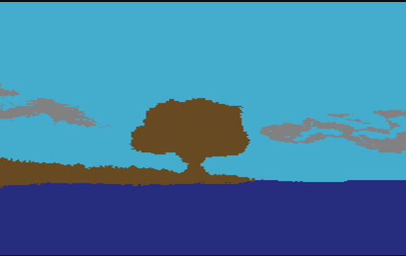
→
?
What should come out on the right? Is there exactly one right answer?
Each input allows many plausible outputs. A generator must pick one that looks real.
pix2pix (Isola et al. 2017) · CycleGAN (Zhu et al. 2017) · Context Encoders (Pathak et al. 2016) · SPADE (Park et al. 2019). All published model outputs.
One input, many answers
The same label map, three different photographs
the condition
→
sample 1
sample 2
sample 3
A generator does not learn one answer. It learns a distribution of answers and draws from it.
SPADE / GauGAN, Park et al. 2019, teaser figure: here the variation comes from a style image given to the generator.
What all of these share
Randomness in, a learned network, a sample out
Training means: adjust $\theta$ until the samples look like the data. But what is the loss?
What can the condition be?
Tell the generator what you want
a label $c = 7$
our own conditional VAE: eight different random $z$, all asked for a 7
a sentence + a date“a satellite image of an electric substation in Finland”, August vs January
DiffusionSat (Khanna et al., 2024): same caption, only the month changes
a sentence + a place“a satellite image of a stadium”, France vs USA coordinates
DiffusionSat: same caption, only the latitude and longitude change
an image a sketch, a label map, a photo with a hole
→
pix2pix, from the earlier slide
The condition fixes what; the randomness still decides which one of the many matching outputs you get.
Our conditional VAE, all labels at once
The label picks the digit; the random $z$ picks the style
0123456789
Each row: one label $c$, from 0 to 9.
Each column: one random $z$, the same all the way down.
Read down a column: every digit is written with the same slant and thickness. The code $z$ carries the handwriting; the label carries the identity.
Part 1 of this course
You have already built a generator
Our name model reads three characters and gives a probability for every next character.
after a a b, the trained model says:
–
0.46i
0.12h
0.09r
0.08b
0.06s
0.04other 21
0.15
Generate: sample a character, append it, repeat.
a→a→b→i→d→–
A different random draw at any step gives a different name. That is a generative model: it gives probabilities, and we sample from them.
Same idea today: learn a distribution, then sample from it. Only now the samples are images.
the two-bump sum, now over every code in the plane.
Parts 2 to 4 are about this one problem. First, a simpler idea that almost works: the autoencoder.
Part 2 of 7
First attempt: an autoencoder
Part 1 ended with a catch: to learn a decoder we need to know which code goes with each image. An encoder network could simply tell us. Let us try that, and watch what breaks.
✓Distributions and hidden causes
2Autoencoders
3KL divergence
4The ELBO
5Reparameterisation
6The VAE on MNIST
7GANs
Squeeze, then rebuild
An autoencoder on our 3
No labels needed: the image is its own target. The 2 numbers in the middle are all the decoder gets.
Pixels are 0 or 1 here (we binarise MNIST). Later we will see this is exactly a log-likelihood.
Trained on 60,000 digits
It reconstructs very well
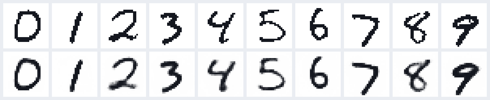
top: test digits it never saw
bottom: decoded from a 16-number code
784 pixels squeezed into 16 numbers and back. Average loss 44.9 nats per image. Can we now make new digits?
The obvious idea
Keep the decoder, feed it a random code
The decoder turns codes into digits. So a random code should give a random digit. Right?
What is a "random code"?
$z \sim \N(0, I)$: two independent bell curves
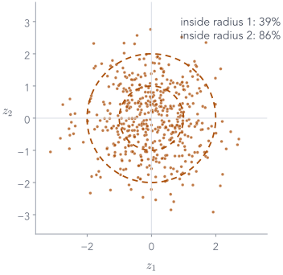
Draw $z_1$ from a standard bell curve $\N(0, 1)$: mean 0, spread 1. Draw $z_2$ the same way, independently.
Together that is written $\N(0, I)$: the 0 says the centre is $(0, 0)$; the I (identity matrix) says each number has spread 1 and the two do not depend on each other.
500 draws, plotted: most land within 2 of the origin, almost none beyond 3.
Why this choice? It is the simplest distribution we can sample from. The decoder, though, was never told about it.
What actually comes out
Random codes give scribbles
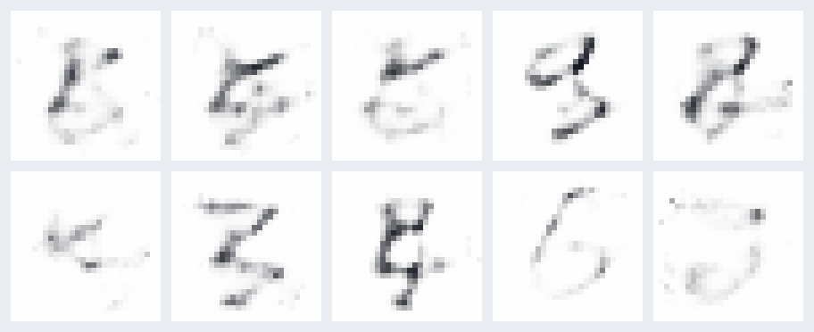
ten codes drawn from $\N(0, I)$ in 16 dimensions, through the trained decoder
The decoder only ever saw codes made by the encoder. Where do those codes live?
Look inside (2-number version)
Where 5,000 test digits land
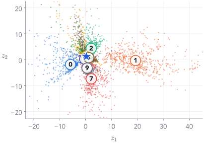
Each dot is one test digit's code, coloured by its true label. The star is our 3.
Same digits cluster together. Nobody asked for that; it just helps reconstruction.
Look at the axes: $z_1$ runs from −18.5 to 40.4, $z_2$ from −19.7 to 19.4. Nothing made the codes stay near the origin.
The code space has an arbitrary shape, scale and position.
Overlay random codes
Random draws all land in one small spot
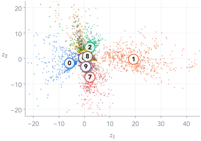
Now add 150 random codes from $\N(0, I)$ (orange), the kind we fed the decoder two slides ago. Dashed circles: radius 1 and 2. On this map they all fall into one small crowded patch.
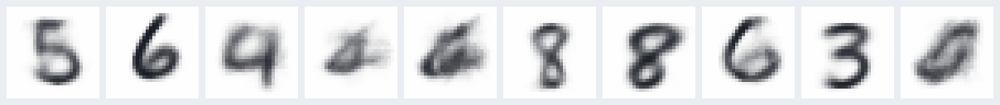
ten of them decoded: some digits, some smudges
And we can never generate a 1: the 1s live near $z_1 \approx 20$.
To sample, we need to know where the codes are, and every point there must decode to something sensible.
Try it: the trained autoencoder, in your browser
Pick a code, any code, and decode it
decoded from $z$the real digit
$z$ = (, )
A real digit's code decodes well. A random code usually gives a smudge: the decoder only learned the dotted regions.
What we want instead
Encode to a cloud, not a point
Known: pull every cloud towards $\N(0, I)$, so random draws land on real codes.
Smooth: every point in a cloud must decode to that image, so neighbourhoods are meaningful.
A preview of where we are going
The same plot for a VAE
Same data, same 2-number code, same random draws. Now the codes sit inside $\N(0, I)$.
the same kind of random codes, decoded
To get here we need two tools: a distance between distributions (KL), and a principled loss (the ELBO).
End of Part 2
What we did, and what comes next
What we did
An encoder squeezes an image into a short code; a decoder rebuilds it. The image is its own target.
Random codes from $\N(0, I)$ decode to scribbles.
The codes spread over an arbitrary range, and the decoder never saw the space between them.
The wish: encode each image to a cloud, and keep every cloud near $\N(0, I)$.
Next: a distance between distributions
"Keep the cloud near $\N(0, I)$" needs one number for how far one distribution is from another. That number is the KL divergence.
Part 3 of 7
KL divergence: how far apart are two distributions?
The fix for the autoencoder was to keep each image's cloud of codes close to $\N(0, I)$. To say close we need one number for the gap between two distributions. We build it from two bars.
✓Distributions and hidden causes
✓Autoencoders
3KL divergence
4The ELBO
5Reparameterisation
6The VAE on MNIST
7GANs
Two distributions over the same two outcomes
The data says 80/20. The model says 60/40.
$P$: the data
0.8
0.2
a 1a 7
$Q$: our model
0.6
0.4
a 1a 7
A dataset of 1s and 7s, 80% 1s. The model believes 60/40. How wrong is it, as one number?
Ingredient: surprise
Surprise $= -\log(\text{probability})$
outcome
$P$
$Q$
surprise if you believe $P$
surprise if you believe $Q$
a 1
0.8
0.6
$-\log 0.8 = 0.223$
$-\log 0.6 = 0.511$
a 7
0.2
0.4
$-\log 0.2 = 1.609$
$-\log 0.4 = 0.916$
Certain events cost 0. Rare events cost a lot. Natural logs, so the unit is the nat.
Believing $Q$, a 1 surprises us more than it should ($0.511$ vs $0.223$), a 7 less ($0.916$ vs $1.609$).
KL, step 1 of 3
For each outcome: how much extra surprise does $Q$ cause?
$$\underbrace{-\log Q_i}_{\text{surprise under } Q} \;-\; \underbrace{(-\log P_i)}_{\text{surprise under } P} \;=\; \log\frac{P_i}{Q_i}$$
outcome
$-\log Q_i$
$-\log P_i$
extra surprise $\log(P_i/Q_i)$
a 1
0.511
0.223
$0.511 - 0.223 = 0.288$
a 7
0.916
1.609
$0.916 - 1.609 = -0.693$
Negative for the 7: $Q$ over-predicts 7s, so a 7 surprises it less than it should.
KL, step 2 of 3
Weight each outcome by how often it really happens
outcome
how often: $P_i$
extra surprise
weighted: $P_i\log(P_i/Q_i)$
a 1
0.8
0.288
$0.8 \times 0.288 = 0.230$
a 7
0.2
$-0.693$
$0.2 \times (-0.693) = -0.139$
Real data is 80% 1s, so the 1 row counts four times as much as the 7 row.
Moving the mean away costs $\mu^2$; shrinking $\sigma$ costs $-\log\sigma^2$. For a code with several coordinates, add one such term per coordinate.
Back to our two bumps
Fit one Gaussian: the KL direction decides what you get
minimise $\KL(\text{data}\,\|\,q)$: cover everything. This is the maximum-likelihood fit from before.
minimise $\KL(q\,\|\,\text{data})$: never put mass where data is absent, so pick one bump.
Mode-covering vs mode-seeking. Keep this picture: it explains blurry VAEs and mode-collapsing GANs.
End of Part 3
What we did, and what comes next
What we did
Surprise $= -\log p$. KL $=$ the average extra surprise from believing $Q$ when the truth is $P$.
$\KL \ge 0$, zero only when the two match, and not symmetric.
Cross-entropy $=$ entropy $+$ KL: training a classifier already minimises a KL.
For Gaussians, per coordinate: $\KL = \tfrac12(\mu^2 + \sigma^2 - 1 - \log\sigma^2)$.
Next: the loss itself
Part 1's catch: learning needs $p_\theta(x)$, an integral over every code. With the encoder and KL in hand, Part 4 turns that integral into a loss we can compute: the ELBO.
Part 4 of 7
The ELBO: a loss we can actually compute
Back to Part 1's catch: learning needs $p_\theta(x) = \int p(z)\,p_\theta(x\mid z)\,dz$, an integral over every code. The encoder (Part 2) and KL (Part 3) together turn it into a loss. We watch the problem happen on our 3 first.
2 numbers per code, so we can afford a 901 × 901 grid of decoder calls: $\log p_\theta(x) = −128.7$ nats. With 16 numbers it would be $901^{16}$ calls.
Multiplying and dividing by the same positive number changes nothing. We are free to choose any $q$; we choose the encoder's Gaussian, which is positive everywhere.
Why bother? Because the next move turns this integral into an average under $q$, and $q$ knows where the patch is.
From the $\E$ slide: $\int q(z)\,f(z)\,dz = \E_{z\sim q}[f(z)]$. Here $f(z)$ is the ratio $p_\theta(x,z)/q_\varphi(z\mid x)$: one number for each code.
Still exact. We now average over codes drawn from the encoder's cloud, right where the patch is.
Deriving the ELBO · a tool for move 4
Jensen's inequality, in one picture
$\log$ curves downwards (it is concave), so every chord lies below the curve.
Two values, $R=1$ and $R=4$:
$$\underbrace{\log 2.5}_{\log \text{ of the average}} = 0.916 \;\ge\; \underbrace{\tfrac12(0 + 1.386)}_{\text{average of the logs}} = 0.693$$
Flip the sign to flip the fraction. Then use the definition: $\KL(q\|p) = \E_{z\sim q}\big[\log\frac{q(z)}{p(z)}\big]$, the average extra surprise.
And for Gaussians we already have its formula: $\tfrac12\sum_j(\mu_j^2+\sigma_j^2-1-\log\sigma_j^2)$.
Put the pieces together
The ELBO, in symbols and in words
$$\ELBO = \underbrace{\E_{z\sim\cenc q}\big[\cx{\log p_\theta(x\mid z)}\big]}_{\text{rebuild } x \text{ from codes in its cloud}} \;-\; \underbrace{\closs{\KL\big(q_\varphi(z\mid x)\,\|\,p(z)\big)}}_{\text{keep the cloud near } \N(0,I)}$$
First term: the autoencoder's reconstruction score, with the code drawn from the cloud.
Second term: the Gaussian KL we just derived.
The two wishes from the autoencoder slide, derived rather than invented. The loss we minimise is $-\ELBO$.
What did the inequality cost?
A second route: start from the true posterior
$\KL\big(q\,\|\,p_\theta(z\mid x)\big)$$=$$\E_q\big[\log q_\varphi(z\mid x) - \log p_\theta(z\mid x)\big]$definition of KL, now against the true posterior$=$$\E_q\big[\log q_\varphi(z\mid x) - \log p_\theta(x,z)\big] + \log p_\theta(x)$Bayes: $\log p_\theta(z\mid x) = \log p_\theta(x,z) - \log p_\theta(x)$, and $\log p_\theta(x)$ has no $z$ in it$=$$-\ELBO + \log p_\theta(x)$the average is exactly minus the ELBO from move 4
Why it is principled: $-\mathcal L$ is a lower bound on $\log p_\theta(x)$, short by $\KL(q\,\|\,\text{true posterior})$.
Still missing: how to train it. The $z$ in the middle is a random draw.
Part 5 of 7
Backpropagating through a random draw
The loss uses a $z$ sampled from the encoder's cloud. To train the encoder, gradients must get from the loss back to $\mu$ and $\sigma$, through that random draw.
✓Distributions and hidden causes
✓Autoencoders
✓KL divergence
✓The ELBO
5Reparameterisation
6The VAE on MNIST
7GANs
The problem
A sampling step sits in the middle of the graph
The trick
Draw standard noise first, then stretch and shift it
$$z = \mu + \sigma\,\eps,\quad \eps\sim\N(0,1) \qquad\Longrightarrow\qquad z \sim \N(\mu,\sigma^2)$$
Same distribution as before. But the randomness now enters as an input, $\eps$, that does not depend on any weights.
The fix
Now the path from the loss to $\mu$ and $\sigma$ is ordinary arithmetic
The noise value $\eps$ appears in the $\sigma$-gradient: a draw far from the centre pushes $\sigma$ harder.
Now plug in numbers
$\mu = 1,\ \sigma = 0.5,\ \eps = -0.4$
One more link in the chain
The network outputs $v = \log\sigma^2$, not $\sigma$
$\sigma$$=$$e^{v/2}$$v$ can be any real number; $\sigma$ is always positive$\dfrac{\partial\sigma}{\partial v}$$=$$\tfrac12 e^{v/2} = \dfrac{\sigma}{2} = 0.25$derivative of $e^{v/2}$$\dfrac{\partial f}{\partial v}$$=$$\dfrac{\partial f}{\partial \sigma}\cdot\dfrac{\partial\sigma}{\partial v} = -0.64 \times 0.25 = -0.16$one more chain-rule factor
Autograd does exactly this. The point of doing it by hand once: no step is magic.
Sum the KL over the 2 code coordinates of each image.
Add per image, average over the batch, step both encoder and decoder.
Averaging BCE over pixels instead of summing silently makes the KL 784× stronger.
Training run, test set
Reconstruction falls, KL rises, then both settle
After 40 epochs: reconstruction 128.8 + KL 7.1 = 135.9 nats per test image.
The payoff
Generate: random code → decoder. No encoder.
This is the whole generator. The encoder was scaffolding for training.
48 random codes each
Samples from two VAEs
2-number code · reconstruction 128.8
16-number code · reconstruction 57.8
More code dimensions: sharper and more varied, but some samples are odd. Neither is perfect.
Because the code is 2-D, we can draw the whole map
Every point in the code space is a digit
where test digits land
decoded on an 18 × 18 grid, spaced by quantiles of $\N(0,1)$
Neighbouring codes give similar digits, and every region decodes to something plausible.
Try it: the trained VAE, in your browser
The same app, now for the VAE
decoded from $z$the real digit
$z$ = (, )
Now random codes from $\N(0, I)$ land among the dots, and almost every one decodes to a digit.
The cover, explained
Walk in a straight line from our 3 to a 7
encode both, take 12 evenly spaced points between their $\mu$'s, decode each (16-number VAE)
the same walk in the 2-number VAE: the line passes through the 5, 8, 4 and 9 regions on the map
The tug of war, made visible
No KL, normal KL, too much KL
autoencoder (no KL)
recon 128.1 · KL 0
VAE, loss = recon + KL
recon 128.8 · KL 7.1
recon + 8 × KL
recon 140.4 · KL 3.9
Rows: code space · reconstructions · random samples. Too little KL: samples fail. Too much: everything blurs together.
An honest look
Why are VAE samples blurry?
1. It fits $\KL(\text{data}\,\|\,\text{model})$. Like the wide Gaussian on our bumps, it must cover every training digit, so when unsure it spreads probability.
2. Pixels are independent given $z$. The decoder outputs one probability per pixel. If a stroke could be here or one pixel over, the best $\pi$ is grey in both places.
3. We show $\pi$, the mean, not a sample. A sample would be speckled instead of grey.
$\pi$ (the mean)
a sample
Not a law of nature: bigger codes, better decoders and better likelihoods all sharpen VAEs.
End of Part 6
What we did, and what comes next
What we did
Our 3: encode to a cloud, sample a code, decode, score: loss $= 129.2$.
Training: reconstruction falls, KL rises, both settle.
Generation needs only the prior and the decoder.
The KL weight trades sharp reconstructions against a usable code space; samples blur.
Next: a different idea
VAEs maximise a bound on $p_\theta(x)$. GANs skip $p_\theta(x)$ entirely: a second network learns to judge real from fake.
Part 7 of 7
GANs: learn the judge instead of the likelihood
VAEs train on a bound on $p_\theta(x)$, and their samples blur. A different idea: no encoder, no ELBO. Train a second network to tell real from fake, and train the generator to fool it.
✓Distributions and hidden causes
✓Autoencoders
✓KL divergence
✓The ELBO
✓Reparameterisation
✓The VAE on MNIST
7GANs
Remember the vote? You were the discriminator.
Two networks, one game
No likelihood, no encoder. The training signal for G comes entirely from D.
Back to our 1-D bumps
A GAN on the toy data, at step 0
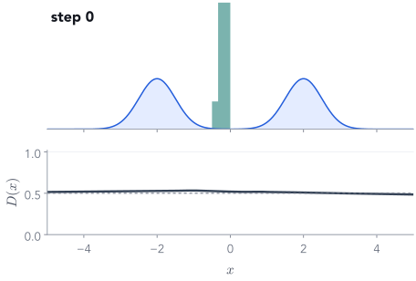
■ blue: the real data
■ teal: G's samples for 2,000 fixed z
■ slate: D(x), the probability that x is real
G: 1 number in, 1 number out. D: 1 number in, 1 logit out. Both small MLPs.
Untrained, G squeezes everything into one spike near 0 and D says 0.5 everywhere.
Step 1 of each iteration
The discriminator is an ordinary binary classifier
D maximises: high D on real data, low D on fakes. This is our $-\mathcal L_D$.
G minimises: only the second term involves G. It wants $D(G(z))$ high.
With a perfect D, G's best move is $p_G = p_{\text{data}}$ (Goodfellow et al. 2014). Real training, with finite networks and steps, has no such guarantee.
Which were real, and what did our discriminator think?
1fake · D 0.54
2real · D 0.45
3fake · D 0.55
4real · D 0.47
5real · D 0.50
6fake · D 0.50
7fake · D 0.39
8fake · D 0.42
9real · D 0.55
10fake · D 0.46
11real · D 0.48
12real · D 0.43
Our trained D gives every tile between 0.39 and 0.55. At the end of training it can barely tell either.
The classic failure
Mode collapse: perfect samples of only one kind
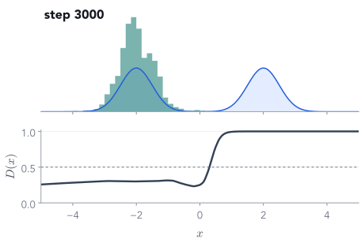
Same data, same training loop, but G has only 4 hidden units per layer.
After 3,000 steps: 95% of samples sit on bump A, 0% on bump B.
Every sample looks real. Bump B is never generated. Picking your favourite samples would never reveal it.
Like the reverse-KL fit: commit to one mode and ignore the rest.
So how do you know it worked?
The loss curves cannot tell these two runs apart
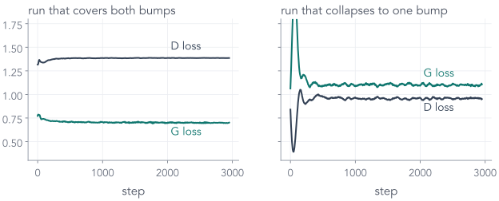
Both curves go flat. Only the samples show that one run lost half the data. Always look at samples, from fixed z, across training.
Back to the shoes
Conditioning: tell both players what you want
If D never sees c, G can ignore the request and still fool D. pix2pix conditions on a whole sketch instead of a label.
Three ways to generate
Same goal, three different training signals
Return to the opening
What you can now explain
a much larger GAN: $z$ → face. Same two-step game, a cleverer G.
a conditional GAN: D judges (sketch, photo) pairs, plus an L1 term.
our VAE: every code in $\N(0, I)$ decodes to a digit, thanks to recon + KL.
Before you leave
Three exit questions
To generate a new digit with a trained VAE, which parts of the network do you use?
The prior and the decoder only: $z\sim\N(0, I)$, then decode. The encoder is for training.
Two different KL divergences appear in the VAE story. What does each compare, and which one is in the loss?
$\KL(q\,\|\,\text{prior})$ is in the loss (6.97 for our 3). $\KL(q\,\|\,\text{true posterior})$ is the gap between the ELBO and $\log p_\theta(x)$ (0.61).
In the G step, D's weights are frozen. How does G still get a gradient?
Freezing stops $D$'s weights from updating, but the gradient still flows through $D$'s input back into $G$. Only detach() would cut it.
Next lecture
What if we generate by removing noise, a little at a time?
our 3
→ add a little Gaussian noise, again and again →
pure noise
Adding noise is easy and gives free training pairs. Can a network learn to undo one small step, then walk all the way back from pure noise?
Appendix
Derivations for reference
The optimal discriminator and its link to the Jensen–Shannon divergence. (The Gaussian KL and the ELBO gap are now derived in the main slides.)
Appendix C
The optimal discriminator
For fixed G, maximise $\int p_{\text{data}}(x)\log D(x) + p_G(x)\log(1-D(x))\,dx$ pointwise in $D(x)$:
So with a perfect D, G minimises the Jensen–Shannon divergence, which is 0 only when $p_G = p_{\text{data}}$, where $D^* = \tfrac12$ everywhere. Idealised: real D and G are finite networks trained for finitely many steps.


 →
→

 →
→
 →
→